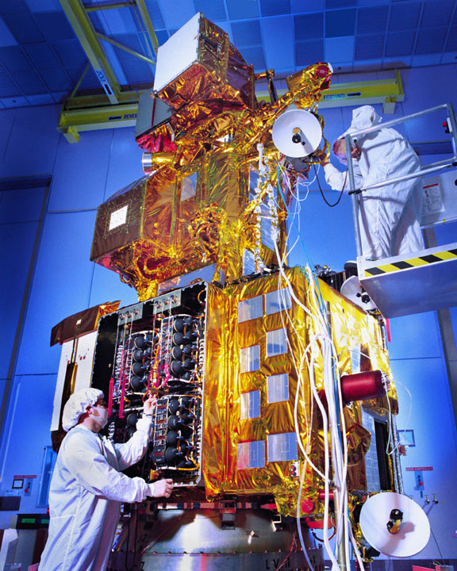
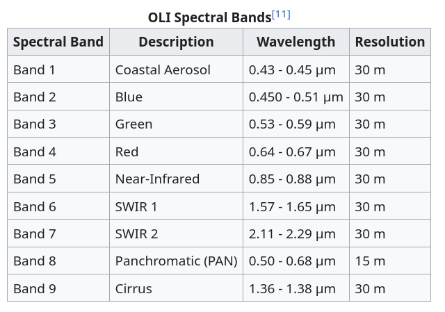
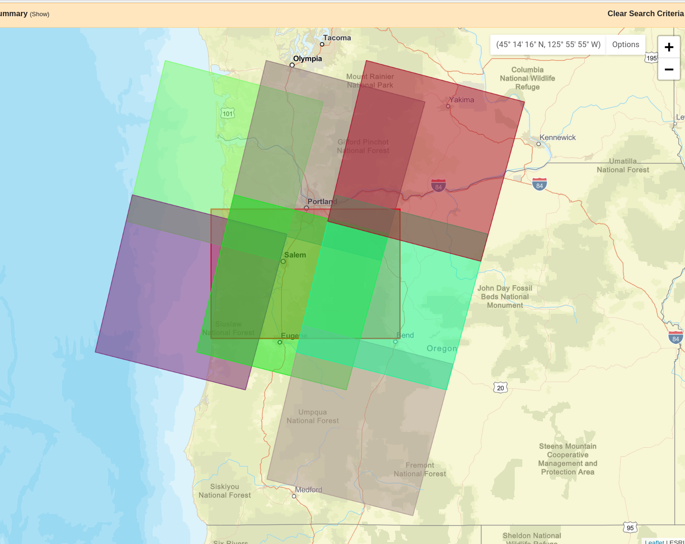
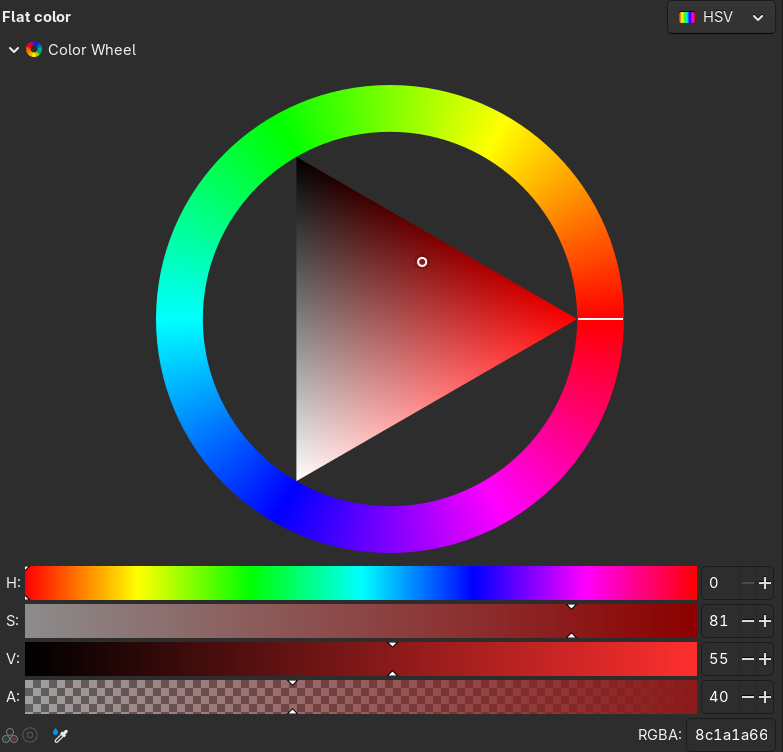
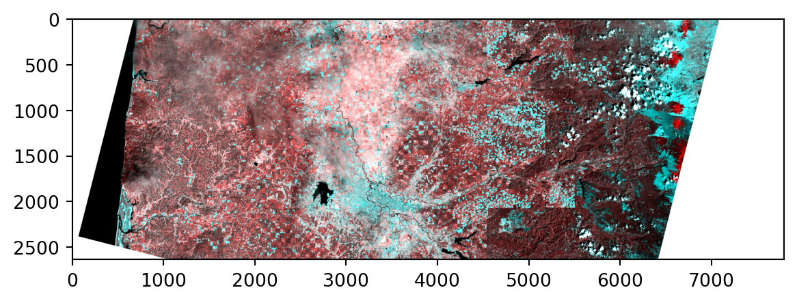

Landsat images
2026-03-02
Data: Landsat images
The NASA/USGS Landsat program provides the longest continuous space-based record of Earth’s land in existence. Landsat data are essential for making informed decisions about our planet’s resources and environment.

Data (Landsat 8/9):
- 700 scenes/day, 185km wide
- 11 spectral bands from a multispectral scanner
- 15m/30m/100m pixels

Obtaining the data
It’s free: from earthexplorer.usgs.gov
as GeoTIFF raster files
and there’s a LOT of it: each scene is ~1G

Raster data in python
Some good references:
Files
I’ve picked a day without a lot of clouds (Aug 25, 2020), downloaded the data above Eugene, unpackaged the tar archive and put the basic bands, cropped somewhat for file size, in data/landsat:
Metadata
You’ll need to get the data, linked on the previous slide or from github, and put it in the data/landsat/ subdirectory.
This comes with a JSON metadata file:
['PRODUCT_CONTENTS',
'IMAGE_ATTRIBUTES',
'PROJECTION_ATTRIBUTES',
'LEVEL2_PROCESSING_RECORD',
'LEVEL2_SURFACE_REFLECTANCE_PARAMETERS',
'LEVEL2_SURFACE_TEMPERATURE_PARAMETERS',
'LEVEL1_PROCESSING_RECORD',
'LEVEL1_MIN_MAX_RADIANCE',
'LEVEL1_MIN_MAX_REFLECTANCE',
'LEVEL1_MIN_MAX_PIXEL_VALUE',
'LEVEL1_RADIOMETRIC_RESCALING',
'LEVEL1_THERMAL_CONSTANTS',
'LEVEL1_PROJECTION_PARAMETERS']Of note: file names
{'ORIGIN': 'Image courtesy of the U.S. Geological Survey',
'DIGITAL_OBJECT_IDENTIFIER': 'https://doi.org/10.5066/P9OGBGM6',
'LANDSAT_PRODUCT_ID': 'LC08_L2SP_046029_20200604_20200825_02_T1',
'PROCESSING_LEVEL': 'L2SP',
'COLLECTION_NUMBER': '02',
'COLLECTION_CATEGORY': 'T1',
'OUTPUT_FORMAT': 'GEOTIFF',
'FILE_NAME_BAND_1': 'LC08_L2SP_046029_20200604_20200825_02_T1_SR_B1.TIF',
'FILE_NAME_BAND_2': 'LC08_L2SP_046029_20200604_20200825_02_T1_SR_B2.TIF',
'FILE_NAME_BAND_3': 'LC08_L2SP_046029_20200604_20200825_02_T1_SR_B3.TIF',
'FILE_NAME_BAND_4': 'LC08_L2SP_046029_20200604_20200825_02_T1_SR_B4.TIF',
'FILE_NAME_BAND_5': 'LC08_L2SP_046029_20200604_20200825_02_T1_SR_B5.TIF',
'FILE_NAME_BAND_6': 'LC08_L2SP_046029_20200604_20200825_02_T1_SR_B6.TIF',
'FILE_NAME_BAND_7': 'LC08_L2SP_046029_20200604_20200825_02_T1_SR_B7.TIF',
'FILE_NAME_BAND_ST_B10': 'LC08_L2SP_046029_20200604_20200825_02_T1_ST_B10.TIF',
'FILE_NAME_THERMAL_RADIANCE': 'LC08_L2SP_046029_20200604_20200825_02_T1_ST_TRAD.TIF',
'FILE_NAME_UPWELL_RADIANCE': 'LC08_L2SP_046029_20200604_20200825_02_T1_ST_URAD.TIF',
'FILE_NAME_DOWNWELL_RADIANCE': 'LC08_L2SP_046029_20200604_20200825_02_T1_ST_DRAD.TIF',
'FILE_NAME_ATMOSPHERIC_TRANSMITTANCE': 'LC08_L2SP_046029_20200604_20200825_02_T1_ST_ATRAN.TIF',
'FILE_NAME_EMISSIVITY': 'LC08_L2SP_046029_20200604_20200825_02_T1_ST_EMIS.TIF',
'FILE_NAME_EMISSIVITY_STDEV': 'LC08_L2SP_046029_20200604_20200825_02_T1_ST_EMSD.TIF',
'FILE_NAME_CLOUD_DISTANCE': 'LC08_L2SP_046029_20200604_20200825_02_T1_ST_CDIST.TIF',
'FILE_NAME_QUALITY_L2_AEROSOL': 'LC08_L2SP_046029_20200604_20200825_02_T1_SR_QA_AEROSOL.TIF',
'FILE_NAME_QUALITY_L2_SURFACE_TEMPERATURE': 'LC08_L2SP_046029_20200604_20200825_02_T1_ST_QA.TIF',
'FILE_NAME_QUALITY_L1_PIXEL': 'LC08_L2SP_046029_20200604_20200825_02_T1_QA_PIXEL.TIF',
'FILE_NAME_QUALITY_L1_RADIOMETRIC_SATURATION': 'LC08_L2SP_046029_20200604_20200825_02_T1_QA_RADSAT.TIF',
'FILE_NAME_ANGLE_COEFFICIENT': 'LC08_L2SP_046029_20200604_20200825_02_T1_ANG.txt',
'FILE_NAME_METADATA_ODL': 'LC08_L2SP_046029_20200604_20200825_02_T1_MTL.txt',
'FILE_NAME_METADATA_XML': 'LC08_L2SP_046029_20200604_20200825_02_T1_MTL.xml',
'DATA_TYPE_BAND_1': 'UINT16',
'DATA_TYPE_BAND_2': 'UINT16',
'DATA_TYPE_BAND_3': 'UINT16',
'DATA_TYPE_BAND_4': 'UINT16',
'DATA_TYPE_BAND_5': 'UINT16',
'DATA_TYPE_BAND_6': 'UINT16',
'DATA_TYPE_BAND_7': 'UINT16',
'DATA_TYPE_BAND_ST_B10': 'UINT16',
'DATA_TYPE_THERMAL_RADIANCE': 'INT16',
'DATA_TYPE_UPWELL_RADIANCE': 'INT16',
'DATA_TYPE_DOWNWELL_RADIANCE': 'INT16',
'DATA_TYPE_ATMOSPHERIC_TRANSMITTANCE': 'INT16',
'DATA_TYPE_EMISSIVITY': 'INT16',
'DATA_TYPE_EMISSIVITY_STDEV': 'INT16',
'DATA_TYPE_CLOUD_DISTANCE': 'INT16',
'DATA_TYPE_QUALITY_L2_AEROSOL': 'UINT8',
'DATA_TYPE_QUALITY_L2_SURFACE_TEMPERATURE': 'INT16',
'DATA_TYPE_QUALITY_L1_PIXEL': 'UINT16',
'DATA_TYPE_QUALITY_L1_RADIOMETRIC_SATURATION': 'UINT16'}Opening a raster:
(2635, 7801){'driver': 'GTiff',
'dtype': 'uint16',
'nodata': 0.0,
'width': 7801,
'height': 2635,
'count': 1,
'crs': CRS.from_wkt('PROJCS["WGS 84 / UTM zone 10N",GEOGCS["WGS 84",DATUM["WGS_1984",SPHEROID["WGS 84",6378137,298.257223563,AUTHORITY["EPSG","7030"]],AUTHORITY["EPSG","6326"]],PRIMEM["Greenwich",0,AUTHORITY["EPSG","8901"]],UNIT["degree",0.0174532925199433,AUTHORITY["EPSG","9122"]],AUTHORITY["EPSG","4326"]],PROJECTION["Transverse_Mercator"],PARAMETER["latitude_of_origin",0],PARAMETER["central_meridian",-123],PARAMETER["scale_factor",0.9996],PARAMETER["false_easting",500000],PARAMETER["false_northing",0],UNIT["metre",1,AUTHORITY["EPSG","9001"]],AXIS["Easting",EAST],AXIS["Northing",NORTH],AUTHORITY["EPSG","32610"]]'),
'transform': Affine(30.0, 0.0, 393885.0,
0.0, -30.0, 4938915.0)}Viewing the raster:
Viewing the raster, in context:
Note the crs!
Values:
raster.read() gets a numpy array of the values. Note the missing data:
Now, let’s explore!
Things we won’t talk about: (see the docs for a lot more!)
USGS provides lots of downstream data products! Sophisticated combinations of bands to help:
- ignore clouds
- get useful real-world measurements (snow cover, thermal upwelling…)
What the spectral bands “mean”
How these bands relate to what we see
What people usually use this data for
Goals:
Basically, “make a nice picture”.
Concretely: make a map where color communicates something important about land type.
Two possible workflows:
Pick a few ‘different’ locations on the map; find some combinations of bands that distinguish those; map these to colors.
Do PCA, and map the PCs to colors.
A quick reminder about “colorspace”:
- Human retinas most commonly have three kinds of color-sensitive photoreceptors.
- So, our color perception is “three-dimensional”.
- Printing: RGB (e.g., #3A11FF;) or CMYK
- Perception: HSL and HSV
- Plus: transparancy, or
alpha: #3A11FF00; - On computer monitors, RGB values range from 0 to 255.
So, by “make an image” we mean “make 1 to 3 rectangular arrays of integers between 0 and 255”.

Brainstorming:
Pick a few ‘different’ locations on the map; find some combinations of bands that distinguish those; map these to colors.
Do PCA, and map the PCs to colors.
- What is the difference between these?
- How would we actually do (1)?
- How would we actually do (2)?
Tools
We could just reduce the landsat images to arrays, but we’d like to maintain spatial context.
So, we’ll need to:
- Extract values from all the bands at particular locations.
- Extract values from all the bands averaged across polygons (e.g., a circle around a location).
- Combine together bands arithmetically.
- Turn the result into an image.
Get the bands in order:
Note: beware; trying to do some things with all of these (e.g., plot them all) might crash your browser.
Working with layers
First let’s look at mapping values to images, and rescaling.
Low contrast?

{kind=link}
{kind=link}
Well, that makes sense:
Let’s rescale!
And, let’s work with just numpy arrays for a bit.
Rescaling:
And, let’s work with just numpy arrays for a bit.
How about in color?
def norm_values(bn):
values = bands[bn].read(masked=True)
a, b = np.quantile(values.data[~values.mask], q=[0.05, 0.95])
values = 255*(values - a)/(b - a)
values[values<0] = 0
values[values>255] = 255
return values.astype(int)
values = np.ma.array([norm_values(bn) for bn in ["BAND_5", "BAND_6", "BAND_6"]]).squeeze()
values = np.moveaxis(values, [0, 1, 2], [2, 0, 1])
print('values:', values.shape)
plt.imshow(values);values: (2635, 7801, 3)
Putting this back on a map:
All it takes is the right transform argument!
Or, with ax.imshow:
Extracting values
We’ll do this “by hand”; another method would use rasterstats.
First: pick some points:
Pour one out for the NAs
Some of the points will be outside the area of the raster:
| x | y | BAND_5 | |
|---|---|---|---|
| 0 | 406480.733030 | 4.879229e+06 | 7540 |
| 0 | 435052.258031 | 4.918478e+06 | 19706 |
| 0 | 437033.534858 | 4.876763e+06 | 15259 |
| 0 | 445455.821025 | 4.925021e+06 | 18754 |
| 0 | 458611.706316 | 4.878197e+06 | 20870 |
| 0 | 553575.806556 | 4.900415e+06 | 14375 |
| 0 | 583939.477393 | 4.909662e+06 | 13602 |
| 0 | 585732.160050 | 4.923036e+06 | 15186 |
| 0 | 602146.586969 | 4.900826e+06 | 0 |
| 0 | 609975.429888 | 4.933177e+06 | 0 |
Rejection sampling:
Let’s sample more than we need and restrict to ones coved by the data:
/tmp/ipykernel_349378/1854403256.py:1: FutureWarning: The 'seed' keyword is deprecated. Use 'rng' instead.
pts = bbox.sample_points(2*npts, seed=123).explode(index_parts=True)[0]Extracting values from circles
A single pixel seems kinda… noisy? Let’s take averages within some buffer around each point.
Of use: mask
Let’s get some tooling together:
- Write a fuction that gets average values in each of a bunch of polygons from a band.
- Apply that function to each of our bands.